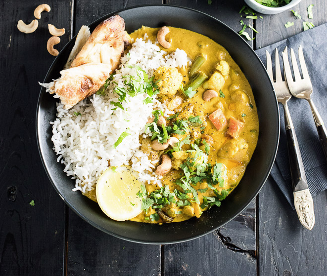

My Tuesday menu
vegetarian korma

Ingridiens:
- 1 tablespoon oil
- 1 large onion, chopped
- 1 – 2” piece of ginger, peeled and chopped
- 4 garlic cloves, smashed with the back of a knife
- 1 – 5.5-ounce can of tomato paste
- 1 tablespoon each: curry powder and garam masala
- 1 1/2 teaspoons each: cumin, coriander, turmeric, cardamom
- 1–2 teaspoons sea salt
- 1/2 teaspoon each: ground cloves, fennel, fenugreek and chili flakes
- 400ml can of coconut milk
- 1/2 cup cashews
- 2 tablespoons lemon juice
- 1/2 cup yogurt (omit or use vegan yogurt for vegan)
- 1 tablespoon brown sugar (sub coconut sugar or honey for paleo)
- Top with any or all: cashews, cilantro, lemon, and raisins
Method
Heat the oil in a medium-sized pot over medium-high heat.
Add the onion and cook, stirring
occasionally, until it is soft, about 5 minutes.
Add the ginger and garlic and cook for 2 minutes
more.
Remove the pot from the heat and add the tomato paste and all of the spices.
Stir well then return
the pot to the heat. When the spices are fragrant and the tomato paste caramelized, after about 1
minute, add the coconut milk, cashews, lemon juice and 1 1/4 cups of water. Let the pot boil for 5
minutes to soften the cashews.
Working in batches, blend the curry until it is smooth then add it back to the pot. Stir through the
yogurt and brown sugar and add more sea salt, if needed. Stir the veggies into the curry and serve
immediately topped with any or all of the toppings.